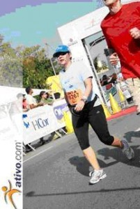
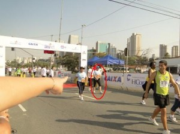
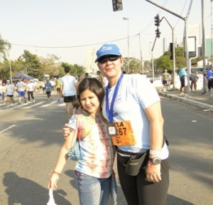
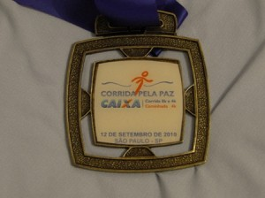

Cia. Ex-sedentário
vamo, vamo, vamo…

Ainda estou em euforia, muito bom para o ego saber que consegui completar o percurso, inteiro. Tinha planejado fazer a minha perna em um tempo de 45 à 50 minutos. Mas no calor da empolgação, acabei entregando a pulseira para o Cezar aos 43 minutos.
Como fui o sexto, tive que aguentar bastante a ansiedade. Cheguei bem cedo, as 6:40 no local combinado e somente por volta da 10:10 eu comecei a correr, quando a Marina passou a pulseira para mim. Nesse tempo todo de espera, deu vontade de mijar, fui, voltei, conversei com a Marisa e o Wiliam. Parece uma eternidade. Mas os 40 minutos da corrida, passam muito rápido, quanta diferença.
Muito interessante o esquema do revezamento. A questão de torcer e vibrar com o tempo que cada um da equipe faz. SMS pra cá, ligação de voz pra lá, com certeza o celular é um acessório indispensável para corridas deste tipo. Mas a maior emoção é mesmo a passagem da pulseira. Eu até dei um sprint ao passar a pulseira para o Cezar.
Depois desta festa toda, não vejo a hora de ir correndo para casa e encontrar meus filhos e dizer “Papai conseguiu” e principalmente dar um abração na Andrea (minha moça) que sofreu comigo e me deu muita força nesta vitória.


Dia anterior ao dia da maratona. Estou com frio na barriga. Estas últimas semanas estão sendo um tobogã emocional. Mas esta semana em particular, procurei levantar minha auto-estima. Passei a me preocupar mais com detalhes do dia-a-dia. Procurando organizar as pequenas bagunças com intuito de organizar os pensamentos.
Já participei de corridas individuais em que os amigos correm um ao lado do outro. Agora é diferente. Estarei sozinho no asfalto, envolto de uma monte de gente. Soa irônico isso.
Mas uma coisa tenho certeza, vou dar o melhor de mim amanhã, respeitando os meus limites é claro. E quero comemorar muito com a equipe blogueiros Taeq depois da chegada o Wiliam.
Quero desejar boa sorte a todos os atletas que vão participar da maratona de revezamento.
Terei um dia cheio de compromissos. E amanhã, então… um mega compromisso. Comecei a correr as 05:20 aqui em Pirituba. Acho que o corpo deve ter sabido que era sábado, porque queria continuar com o movimento. Só parei porque tinha de levar a Mari na escola antes das 07:00 horas.
Corri leve e gostoso por 12,5km em 01H24Min46Seg.
Recentemente estive com uma psicóloga e na sessão ela me indagou:
“Você conhece os seus limites?”
E eu fiz cara de interrogação e perguntei:
“Como assim limites?”
Ela deu uma gargalhada gostosa e emendou:
“Com certeza você não conhece seu limites.”
Comecei a rir junto. Com este bate papo divertido acabei percebendo o quanto eu sou negligente com a questão de limites e não estou falando apenas em relação a atividade física. Resultado, fiquei matutando esta ideia após a consulta.
Pedro, um amigo, me chamou para caminhar no dia seguinte a noite, ele também vai participar da maratona de revezamento. Mas no dia seguinte o tempo fechou, ficou frio com uma pequena garoa.
Antes da sessão com a psicóloga eu iria caminhar mesmo sob a garoa. Agora o pensamento é outro: “Não vai piorar a minha gripe? Vai sim!”. Pensei vou ligar para o Pedro. Na mesma hora encontrei um recado no celular com ele desistindo da ideia de caminhar naquele dia, pelo mesmo motivo.
Devemos respeitar os nossos limites e para isso devemos nos questionar se o que está sendo proposto é possível de ser realizado naquele momento. Eu ainda estou aprendendo a lidar com estas situações. Acho que cautela me ajudará a avançar em meus desejos de maneira controlada sem ter surpresas, inclusive dentro do esporte.
Depois do primeiro dia na academia, peguei uma gripe forte (pra complicar um pouco as coisas) e fiquei uma semana de molho. Na primeira vez eu fui bem cedo na academia, antes do trabalho, desta vez eu fui a noite. Estou ainda testando qual horário eu me adapto melhor.
A questão de ir depois do dia de trabalho implica em uma inércia maior, o desejo do corpo é sentar no sofá.
Para aquecer fui para esteira e sem enrolar já parti para uma velocidade de 6,6 Km/h. Depois de 10 minutos a esteira marcava a distância de 1 Km. Parti para a musculação com a ficha das séries na mão. Bem diferente das academias que eu ia no passado em que eu era obrigado a decorar a sequência. Uma vez terminado toda a série voltei para a esteira e programei a velocidade de 6,6 Km/h durante 30 minutos.
Durante os primeiros 15 minutos a corrida estava prazerosa, mas os 15 minutos restantes foram mais complicados, apenas ficava vendo os números no painel da esteira e fazendo contas de cabeça para esquecer a força contra que começava a aparecer em meus pensamentos.
30 minutos, ufa!
Totalizei 3,3 Km. Fiquei muito satisfeito comigo mesmo e tive a certeza que completarei vivo a prova (claro que estou exagerando). Fiz alongamento que é muito necessário e que ultimamente estava deixando de lado.
No vestiário, além de me pesar (sempre faço isso) resolvi pesar a minha mochila, para minha surpresa ela pesa 5 kg. Imaginei-me como um burro de carga, carregando este peso para cima e para baixo.
Nota mental:
Preciso rever as tranqueiras que eu transporto.

Foto tirada no local do evento – próximo a entrega do chip
Setembro está sendo um mês bem atípico para os corredores de rua, vem sendo realizado todo final de semana várias corridas para todos os gostos e pernas.
Para aqueles que ainda não me conhecem pelos post anteriores, sou iniciante nessa modalidade Corredor de Rua, ainda um pouco sedentária, mas……….. as corridas de rua para mim tem sido verdadeiros treinos. Sei que isso não é o ideal, mas estou psicologicamente preparando-me para assíduos treinos para melhor qualidade de vida e também melhorar minha performance nas provas.
A minha primeira inscrição fiz no ímpeto, sem noção do quanto representava 5 km, tendo na semana que antecedia a prova a conscientização desse ato, o temor de ultrapassar o tempo estimado que tinha lançado no site quando da inscrição, cheguei a sentir um frio na barriga quando estávamos chegando no local da prova.
Hoje, esse temor já passou, vou para as provas querendo baixar meu tempo, mas com a consciência que deveria ter treinado para tal, assim como meus colegas do blog o fazem. Sem querer dar ou arranjar desculpas, para os homens é tudo mais fácil, o desprendimento é maior. Veja, durante a semana sou profissional, nos finais de semana quero ser mais “Amelia”. É no final de semana que vou ao sacolão comprar frutas e legumes para a semana; que piloto o fogão, que curto mais a família, tomamos o café da manhã juntos, então meu sábado foi para as “cuias”……… final de semana de treino, somente no domingo, com ressalvas.
Como escrevi acima, setembro está sendo fenomenal, corrida todos os findis e, não foi diferente no dia 12/09, lá estava eu na Avenida Jornalista Roberto Marinho as 7hs30min, me aquecendo para a corrida. O dia estava lindo, havia muitas pessoas com a camiseta do evento, um azul claro médio bonito e muitas outras com suas camisetas coloridas, alguns em grupos (amigos, familiares) e outras solitárias assim como eu, unidos com uma única finalidade correr.
Dada a largada, andei até o portal para começar a correr quando pisasse no tapete vermelho que acusava 2min e alguns segundos de tempo decorrido. Logo no início uma bela subida de 1,5km, o sol já estava bem alegre e resplandecente.
Novamente um percurso diferente subida de início, fôlego não me faltou, faltou pernas, isso sem falar no cheiro insuportável do alto da ponte, em virtude da poluição do Rio Pinheiros e enquanto eu galgava meus metros de corrida subindo ponte acima com um sol forte no rosto e o cheiro ruim, bateu um pensamento feioooooooo, desistir da prova…………….. mas o outro lado do cérebro me dizia que valia a pena continuar, afinal eu paguei a inscrição, fiz o marido e a filhota acordar super cedo num domingo (Melinha também acordou cedo, mas para trampar) – DESISTIR FOFA, J A M A I S !!! E lá fui eu, entre trotes e caminhadas, quando vi a placa de 2 km, pensei, só faltam 3km para a prova………. já na marginal, mais uma subidinha avistei um portal, onde direcionavam os corredores para o percurso mais longo e o meu percurso, que pela grata informação, a corrida era de 4 km, ufa!!!……
Mas esse 1 km final, se desdobraram em 2, continuei forte, olhei algumas vezes o cronometro, mas sem crise, fui eu para os metros finais, a única imagem que voce enxerga pela frente são os números do portal……….. tentei num relance encontrar o marido e a filhota, não os encontrei, fixei meus olhares para aqueles números vermelhos tão expressivos………. bom, cruzava eu aos 34 min e segundos……. confesso que feliz por ter acabado a prova, o tempo……… o tempo dirá por si só, mas no meu cronometro que só o parei alguns segundos depois de cruzado o portal acusava 33min.
O resultado conforme informação do site para meu stress total só seria divulgado na segunda a noite, mas na tarde de segunda já tinha a divulgação, meu tempo bruto foi de 34min39seg e o líquido foi de 32min23seg.
Se comparado o tempo desta corrida com o de Salvador já fiz um progresso, mas o percurso de Salvador era muito melhor totalmente plano, as condições climáticas bem agradáveis, pena não ter aproveitado esse terreno para ter feito um tempo menor.
Enfim, mais um percurso para acrescentar em minha jornada de corredora de rua.
No próximo final de semana estarei participando com alguns parceiros do blog e amigos da 18ª Maratona Pão de Açúcar de Revezamento S.Paulo, minha estréia nesta modalidade, que já está me fazendo perder o sono …
É isso ai, gentemmmmmmmmmmmm, próxima semana imagino que o blog estará recheado de impressões pessoais de nossa turma sobre mais uma corrida do mes de setembro.
Abraços.








Olá pessoal, estou retornado agora aos treinamentos e agora espero me tornar um EX-SEDENTARIO.
Bom nos ultimos 3 a 4 meses emagreci uns 10 kg e ja recuperei uns 12 rsrsrs. Bom apesar dos risos isso não foi bom.
Fiz uma cirurgia (retirada de amidalas), e com isso emagreci muito, na verdade fiquei desidratado, pois fiquei uns 15 dias sem beber agua, e vivendo de gelatina.
Mas enfim, apos a recuperação voltei a comer o de habitual e voltei a engordar bastante, estou hj com 104 Kg, minha meta no inicio do ano era de perder 10 a 15 kg ate o fim do ano. Hoje estou mudando a minha meta para o fim do ano, quero perder de 7 a 10 kg.
Retornei ontem aos treinamento, estou em uma academia proxima a minha casa, treinamento bem leve, 30 min de caminhada mais uns 40 de treinamento com pesos. Mesmo pegando leve, meu corpo esta todo dolorido, a sola do meu pé não para de doer, mesmo quando estou com eles fora do chão.
Mas desta vez continuarei, e tenho que me reeducar quanto a alimentação.
 Planejei hoje fazer um percurso com a mesma distância de minha “perna” na maratona. Saí de casa disposto mas sem correr para não me esforçar.
Planejei hoje fazer um percurso com a mesma distância de minha “perna” na maratona. Saí de casa disposto mas sem correr para não me esforçar.
Ao chegar em casa e montar o mapa do percurso na Internet, descobri que tinha feito 6 Km, acima da distância que vou percorrer com o tempo de 63 minutos, é um tempo alto, mas apenas caminhei e o melhor, não me cansei.
Isso dá um passo de 10:30 minutos para cada quilômetro. No dia da prova pretendo fazer um passo de 9:30 min para cada Km. E está chegando, já é domingo e ansiedade aumentando. O importante é não surtar.
Estou aqui escrevendo bem mariquinha. Afinal, não fui bravo como o Alex. Sucumbi diante da Coca Zero e tenho como nota um ZERO! Zero de determinação. Você vai longe Alecão e a São Silvestre lhe aguarda meu amigo.
Hoje eu corri 1okm e me estabaquei no chão duas vezes.
Estranho voltar a fazer academia depois de tanto tempo. Eu tenho más lembranças da época que frequentei. A questão é que não me adaptei ao lado social da academia que eu frequentava.
Bem, vamos lá, cheguei na academia e fui muito bem recebido. Fiz o cadastro do dedo e fui pro vestiário. Troquei de roupa e fui para as esteiras. 10 minutinhos de esteira e fui para os aparelhos de musculação.
Aos poucos fui “apresentado” aos aparelhos e minhas séries foram sendo montadas. Sempre duas vezes de quinze, legpress, extensora… A minha série foi focada nas pernas, mas com direito a braço também.
Imaginei fechar o dia com dores musculares. Mas isso não aconteceu, estou em melhor forma do que eu imaginava.
.jpg "DSC01755 (1024x576)")
.jpg "DSC01758 (1024x576)")
.jpg "DSC01767 (1024x576)")
.jpg "DSC01867 (1024x576)")
.jpg "DSC01929 (1024x576)")
.jpg "DSC01931 (1024x576)")


{kind=link}
{kind=link}
{kind=link}
{kind=link}
Últimos comentários